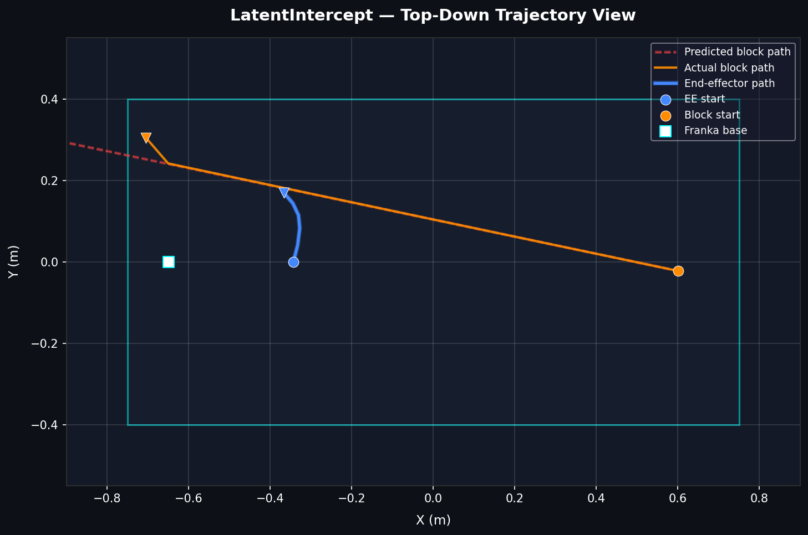
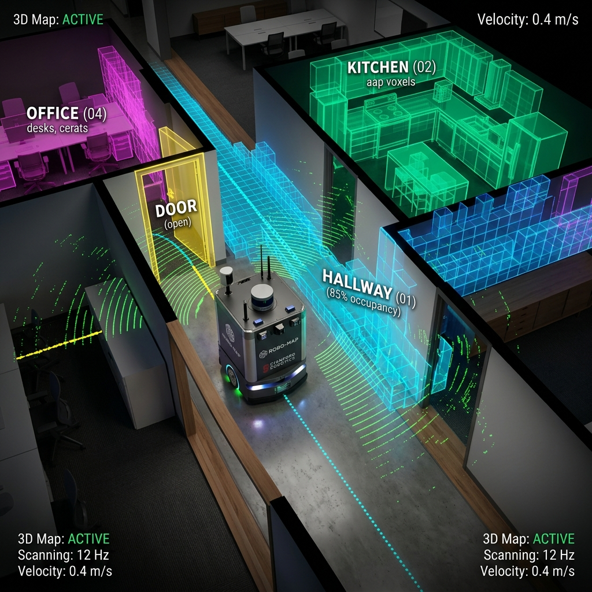

Northeastern University · MS Robotics
Academic Research
10 projects across SLAM, Computer Vision, Planning, and Reinforcement Learning.

ROBUSTWALKER
S: Unitree Go1 required robust blind locomotion.
A: Built PPO with MuJoCo/Genesis backend & 12-dim torque control.
R: Reached 1.41 m/s trot, 15N push recovery, 85x training speedup.

IronStride
S: Unitree H1 needed stable standing control in MuJoCo.
A: Evaluated PPO vs SAC, identifying SAC reward exploitation.
R: Both reached 20s stability; PPO converged 7x faster.

LatentIntercept
S: Dynamic target interception required anticipatory control.
A: Deployed TD-MPC2 world model + MPPI planning for a Franka arm.
R: 12-timestep lookahead enabled successful sliding puck catches.

visibilityVisionTouch
S: Pick-and-place task needed robust visual servoing.
A: Implemented IBVS using GroundingDINO, SAM, and image Jacobians.
R: Achieved closed-loop 6-DOF velocity control in PyBullet.

NeuFlow v3
S: Optical flow needed sharper depth discontinuity boundaries.
A: Replaced convex upsampler with a 3-scale implicit neural decoder.
R: Achieved best EPE of 3.15px on the VKITTI2 benchmark.

map3D-Mapping-RTAB-SLAM
S: Texture-poor tunnels caused standard ORB-SLAM failures at 25m.
A: Configured RTABMap depth-based SLAM with ROS 2 and GTSAM.
R: Successfully mapped 200m+ with consistent loop closures.

Dead-Reckoning
S: Unreliable GPS required robust inertial sensor fusion.
A: Applied hard/soft-iron calibration, complementary filter, and EKF.
R: Cut yaw error to ±4° and achieved <2m RMSE over a 500m route.
alt_route
Improved-LLM-A-star
S: A* pathfinding suffered from excessive node exploration.
A: Integrated LLM to generate semantic guiding waypoints.
R: Reduced exploration by ~21.6% while maintaining optimal paths.